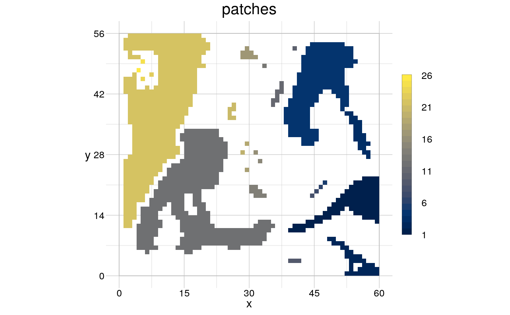
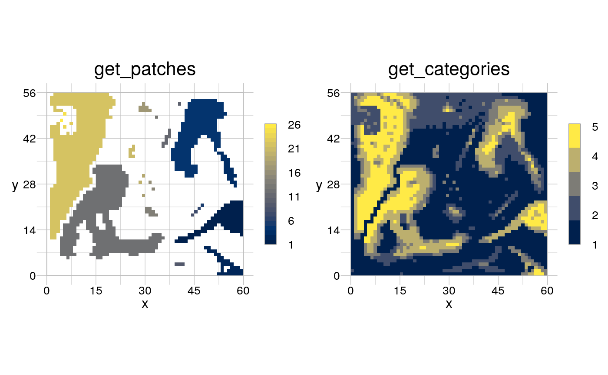

Typical GIS operations modify gridded objects according to a given process. This can serve to identify certain objects or to prepare the quantitative assessment of the spatial object in question.
modify(input = NULL, by = NULL, sequential = FALSE, merge = FALSE, keepInput = FALSE)
| input | [ |
|---|---|
| by | [ |
| sequential | [ |
| merge | [ |
| keepInput | [ |
A list of RasterLayers or a RasterStack of modified
objects according to the number of chosen datasets and (combinations of)
operators.
Operators can be called several successive times with modified arguments. The following operators are recently defined...
... to select a subset of cells:
rBounded:
Select cells with values between an upper and lower threshold in a raster.
rGreater: Select cells with values below a threshold in
a raster.
rLess: Select cells with values above a
threshold in a raster.
rMask: Select cells of a raster
based on a mask.
rMatch: Match cells of a raster with a
kernel.
... to modify cell values:
rBinarise:
Binarise the values in a raster.
rCategorise: Assign
categories to the values in a raster.
rDistance:
Calculate the distance map for a raster.
rFillNA: Fill
NA values in a raster.
rOffset: Offset the values in a
raster.
rPermute: Assign a permutation to the cell
values of a raster.
rRange: Change the scale of the
values in a raster.
rSubstitute: Substitute values in a
raster.
... to determine objects:
rCentroid:
Determine the centroid of foreground patches in a raster.
rPatches: Determine foreground patches in a raster.
rSkeletonise: Determine the skeleton of foreground patches in
a raster.
... to morphologically modify a raster:
rDilate: Morphologically dilate foreground patches in a
raster.
rErode: Morphologically erode foreground
patches in a raster.
... to modify the overall raster:
rBlend:
Blend two rasters with each other.
rReduce: Combine a
raster stack after segregation.
rRescale: Rescale a
raster.
rSegregate: Segregate values in a raster into
layers.
Moreover, you can create your own operator or check this package's github page to suggest new algorithms or make a pull-request.
input <- rtData$continuous # employ modification with merely one operator binarised <- rBinarise(input, thresh = 40) visualise(binarised)# employ several operators combined to an algorithm, 'obj' does not need to # be specified per operator in the algorithm, as 'modify' assigns it. getPatches <- list(list(operator = "rBinarise", thresh = 40), list(operator = "rPatches")) patches <- modify(input, by = getPatches, sequential = TRUE) visualise(patches)# To run separated sub-algorithms, use names for each operator to specify # which elements should be computed sequentially. getPatchNCats <- list(get_patches = list(operator = "rBinarise", thresh = 40), get_patches = list(operator = "rPatches"), get_categories = list(operator = "rCategorise", n = 5)) patchNCats <- modify(input, by = getPatchNCats, merge = TRUE) visualise(patchNCats)# Create objects that are usable later in the algorithm getMedialAxis <- list(skeleton = list(operator = "rSkeletonise", background = 0), medAxis = list(operator = "rPermute"), medAxis = list(operator = "rDistance"), medAxis = list(operator = "rMask", mask = "skeleton")) MAT <- modify(binarised, by = getMedialAxis, merge = TRUE) visualise(MAT, trace = TRUE)#> #> #> #> #> #> #> #> #> #>